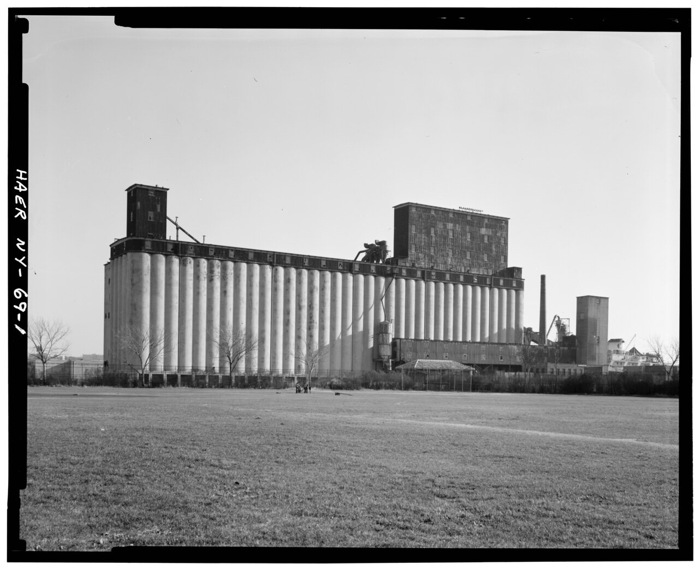
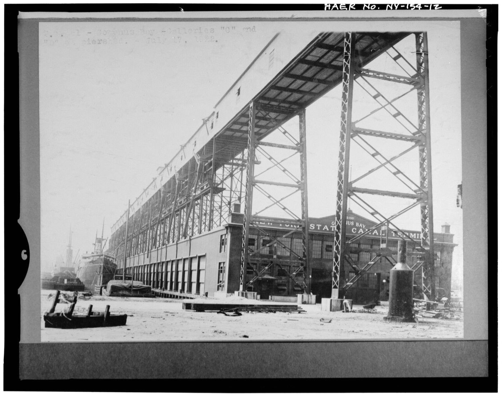
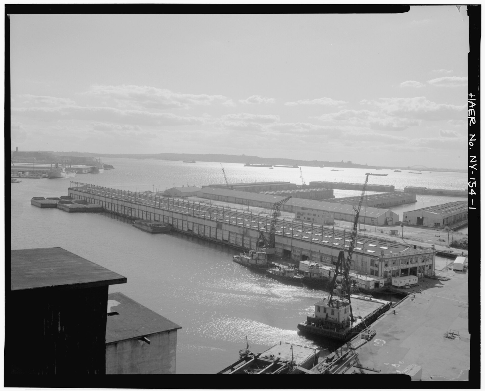

History
Built by New York State for the Barge Canal era, the terminal has watched a hundred years of the harbor change around it.
- 1922
Built by New York State
Designed by the Office of the State Engineer to serve the State Barge Canal, the reinforced-concrete grain elevator took 16 months to build, cost $2.5 million and opened on September 1, 1922.
- 1944
The Port Authority era
Control of the terminal passes to the Port Authority of New York and New Jersey.
- 1965
Grain operations end
As grain shipping shifts to other ports, the elevator is deactivated.
- 1997
The Quadrozzi family
John Quadrozzi Sr., president of Quadrozzi Concrete, purchases the terminal and the surrounding 46 acres.
- 2004
Gowanus Bay Terminal
John Quadrozzi Jr. takes the helm and leads the property as Gowanus Bay Terminal, GBX.
- Today
A working landmark
Maritime and industrial tenants, film and photo productions, and events share one of Brooklyn’s most storied waterfront sites.



In 2013, Quadrozzi Enterprises represented seven multi-user waterfront terminals in Brooklyn and Queens, more than 30 acres of industrial land, with “an emphasis on sustainability & community.”
Land & sea
With decades of sea-freight experience, Quadrozzi representatives moved bulk cargo from Europe, South America and Mexico up the Eastern Seaboard into New York. On land, trucking skills passed down through generations moved concrete, sand and stone, rubble, rock salt, bulk powders and specialty equipment throughout the city.
After Sandy
After Hurricane Sandy in 2012, the company called for rebuilding smarter in flood zones: keep living space and mechanicals above the flood plain, build with concrete for strength and fire resistance, and replace wooden boardwalks with concrete ones that double as sea walls.
Our approach
We do not promote our name using persuasive language or trickery, but rather use our natural creative talents and diverse experience in finding the simplest solutions to each objective.Quadrozzi Enterprises, 2013